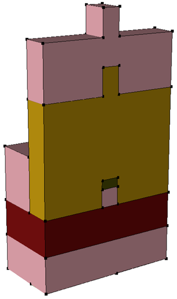
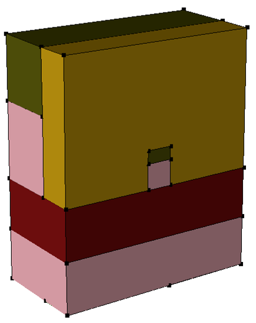

main menu
| module menu
| << previous section
| next section >>
main menu
| module menu
| << previous section
| next section >>
Sentaurus Structure Editor
7. Process Emulation Mode
7.1 Overview
7.2 Defining the Emulation Domain
7.3 Defining the Doped Substrate
7.4 Defining the Mask
7.5 Patterning
7.6 Defining an Implantation Profile
7.7 Implantation
7.8 Stripping Layers
7.9 Depositing a Doped Layer
7.10 Etching
7.11 Fill
7.12 Polish
7.13 Finishing the Bipolar Junction Transistor
7.14 Assignment
Objectives
- To create 3D device structures using the process emulation mode of Sentaurus Structure Editor.
7.1 Overview
The process emulation mode of Sentaurus Structure Editor has been superseded by the 3D process simulation capabilities of Sentaurus Process. Using the process emulation mode of Sentaurus Structure Editor is discouraged. See the Sentaurus Process module, Section 11. Special Focus: Three-Dimensional Examples.
In process emulation mode (Procem), Sentaurus Structure Editor translates processing steps, ranging from material deposition, patterning, and etching to trench fill and surface polish, into geometric operations.
Procem supports advanced options, such as isotropic or anisotropic etching and deposition, and rounding and blending, to account for specific processing effects. Nongeometric operations, however, are performed only at a simplified level. Only analytic implantation is supported. Diffusion is not supported.
Sentaurus Structure Editor does not support Procem commands from the user interface. Procem operations can be performed only using Scheme extension commands in the command-line window.
This section introduces the concept of process emulation and some basic emulation operations available in Sentaurus Structure Editor. The example is to build a 3D bipolar junction transistor (BJT) device structure as shown in Figure 1.
Figure 1. Three-dimensional BJT.
7.2 Defining the Emulation Domain
The Scheme command to define the emulation domain is:
(sdepe:define-pe-domain (list Y1 Z1 Y2 Z2))
where Y1 Z1 and Y2 Z2 are the coordinates of two opposite corners of the rectangular emulation domain.
You can also import information from a GDS layout file. The following Scheme command converts a GDS file to a .mac file:
(sdeicwb:gds2mac "gds.file" gdsfile "cell" cellname "layer.names" lnames "layer.numbers" lnumbers "sim3d" sim3ddomain "scale" scale "domain.name" dname "mac.file" macfile)
The coordinates of the emulation domain then can be extracted from the .mac file and used in the sdepe:define-pe-domain command.
7.2.1 Example
The emulation domain for the BJT is defined with:
(define Ymax 2.2) ; Width (define Zmax 1.2) ; Depth (sdepe:define-pe-domain (list 0.0 0.0 Ymax Zmax))
Procem also supports polygonal emulation domains. In this case, a list of all corner coordinates of the polygon must be given.
If, for example, you have a GDS layout file BJT.gds using nanometer as its unit, with the cell "BJT" containing the layer (1:0) "SUBC", the following command creates a .mac file BJT_SIM3D.mac containing the simulation domain and the masks from the GDS file:
(sdeicwb:gds2mac "gds.file" "BJT.gds" "cell" "BJT" "layer.names" "(list 'SUBC)" "layer.numbers" (list 1) "sim3d" (list 0.0 0.0 2.2e3 1.2e3) "scale" 1.0e-3 "domain.name" "SIM3D" "mac.file" "BJT")
Then, such a .mac file can be loaded with the following command:
(sdeicwb:load-file "BJT_SIM3D.mac" 0.001)
The simulation domain in the .mac file is set with the command:
(sdeicwb:set-domain "SIM3D")
Finally, the emulation domain can be defined after extracting the bounding box coordinates of the simulation domain in the .mac file:
(define mindx (sdeicwb:get-xmin)) (define maxdx (sdeicwb:get-xmax)) (define mindy (sdeicwb:get-ymin)) (define maxdy (sdeicwb:get-ymax)) (sdepe:define-pe-domain (list mindx mindy maxdx maxdy))
7.3 Defining the Doped Substrate
The Scheme command to define the substrate is:
(sdepe:add-substrate "material" material "thickness" thickness)
7.3.1 Example
(define Nasub 1e16) ; Boron concentration (define Xsub 2.0) ; Initial Substrate Height (sdepe:add-substrate "material" "Silicon" "thickness" Xsub "region" "Substrate") (sdepe:doping-constant-placement "DopSub" "BoronActiveConcentration" Nasub "Substrate")
In this example, a constant boron concentration is defined in the substrate in the following steps:
- The entity identifier, which is returned by the sdepe:add-substrate command, is stored in the local variable SUB.
- The region name "Substrate" is assigned to the newly created region with the command sde:add-material.
- The constant doping profile in the "Substrate" region is defined with the command sdepe:doping-constant-placement.
7.4 Defining the Mask
The Scheme command to define a mask is:
(sdepe:generate-mask "mask-name"
(list (list Y1_1 Z1_1 Y1_2 Z1_2 ...)
(list Y2_1 Z2_1 Y2_2 Z2_2 ...)
...)
)
The mask is defined as a list of polygons, where each polygon is defined as a list of coordinates. If the polygon is a simple axis-aligned rectangle, it is sufficient to give the coordinates of two opposite corners.
Masks also can be imported from a GDS file, after converting the GDS to a .mac file, loading the .mac file and setting a simulation domain, as shown in Section 7.2 Defining the Emulation Domain.
7.4.1 Example
The mask for the subcollector implantation is defined with:
(define Yb1 0.2) ; Beginning of base window (define Yb2 1.2) ; End of base window (define Yc1 1.5) ; Beginning of collector contact window (define Yc2 2.0) ; End of collector contact window (define Zc 0.8) ; Depth of contact (sdepe:generate-mask "SUBC" (list (list Yb1 0.0 Yc2 Zc)) )
Alternatively, to import the mask "SUBC" from the GDS file BJT.gds, which has been previously converted to the .mac file BJT_SIM3D.mac with the sdeicwb:gds2mac command and loaded with the sdeicwb:load-file command, you must set the simulation domain with the sdeicwb:set-domain command (see Section 7.2 Defining the Emulation Domain) and generate the masks with the commands:
(define layersname (sdeicwb:get-layer-names)) (for-each (lambda(layer) (sdeicwb:generate-mask-by-layer-name layer layer) ) layersname )
All layers defined in the .mac file with the command sdeicwb:gds2mac ("SUBC" in this case) are converted into masks with the same name, which can be further used for patterning.
7.5 Patterning
The Scheme command for patterning is:
(sdepe:pattern "mask" mask-name "polarity" polarity
["type" "depo-type"] "material" material
"thickness" thickness ["steps" nsteps])
The "polarity" of the mask can be either "light" or "dark", for light-field or dark-field masks, respectively. The "type" can be either "iso" or "aniso".
The optional "steps" parameter determines in how many steps the layer is deposited. Complex geometries might need more than one step. See the Sentaurus™ Structure Editor User Guide for more options.
7.5.1 Example
The resist patterning step for the subcollector implantation is performed with:
(define Tre 0.5)
(sdepe:pattern "mask" "SUBC" "polarity" "dark" "type" "aniso"
"material" "Resist" "thickness" Tre )
{kind=link}
Figure 2. Substrate with the patterned resist layer. (Click image for full-size view.)
7.6 Defining an Implantation Profile
The Scheme command to define an implanted profile is:
(sdedr:define-gaussian-profile
"definition-name" "species"
"PeakPos" peak-position {"PeakVal" peak-concentration | "Dose" dose}
{"Length" diffusion-length | "StdDev" standard-deviation |
"ValueAtDepth" concentration-at-depth "Depth" depth }
"Gauss" | "Erf" "Factor" factor)
The parameter peak-position determines how deep the profile is from the surface. You can specify either the peak-concentration or the dose of the implantation. You can specify the width of the profile by either using diffusion-length or standard-deviation, or specifying the concentration of the profile (concentration-at-depth) at depth. The lateral distribution can be either a Gaussian or an error function.
7.6.1 Example
The subcollector implantation profile is defined with:
(define LatDiff 0.02) (sdedr:define-gaussian-profile "SubCol" "PhosphorusActiveConcentration" "PeakPos" 0.0 "PeakVal" 5e+19 "ValueAtDepth" Nasub "Depth" 0.5
7.7 Implantation
The Scheme command to perform an implantation is:
(sdepe:implant doping-name)
7.7.1 Example
The subcollector implantation is performed with:
(sdepe:implant "SubCol")
{kind=link}
Figure 3. Structure after subcollector implantation step. (Click image for full-size view.)
The sdepe:implant command works as follows: All surfaces not covered with resist are taken as (individual) "reference surfaces" (see the Sentaurus™ Mesh User Guide) for the placement of the analytic doping profile. Furthermore, the doping profile definition is restricted to regions to ensure the correct profiles after possible etching and refill operations. Regions are identified by their region name.
This has the following important implications:
- Unexpected results can occur if regions are renamed after an sdepe:implant step.
- Incorrect profiles can occur in nonplanar structures, as neighboring "reference surfaces" can lead to overlapping profiles.
The sdepe:implant command supports additional options to mitigate the second issue (see the Sentaurus™ Structure Editor User Guide).
7.8 Stripping Layers
The Scheme command to strip a layer is:
(sdepe:remove "material" "material")
7.8.1 Example
To strip the resist after the implantation step, use:
(sdepe:remove "material" "Resist")
7.9 Depositing a Doped Layer
The Scheme command to deposit a material layer is:
(sdepe:depo "material" material "thickness" thickness
["type" depo-type] ["steps" nsteps])
The sdepe:depo command supports several options for rounding corners and edges (see the Sentaurus™ Structure Editor User Guide). The "type" can be either are "iso" or "aniso".
The optional "steps" parameter determines in how many steps the layer is deposited. Complex geometries might need more than one step.
7.9.1 Example
The silicon epi layer is deposited and doped with:
(define Tepi 0.3) (define Ndepi 5e16) (define SiEpi (sdepe:depo "material" "Silicon" "thickness" Tepi "type" "iso")) (sde:add-material SiEpi "Silicon" "SiEpi") (sdepe:doping-constant-placement "DopEpi" "ArsenicActiveConcentration" Ndepi "SiEpi")
In this example, the doping concentration is defined by the same steps as in Section 7.3.1 Example.
7.10 Etching
The Scheme command for etching is:
(sdepe:etch-material "material" material "depth" depth
["steps" nsteps])
where "material" is the material to be etched to a depth given by the "depth" parameter (in micrometer). Only exposed surfaces are etched.
The optional "steps" parameter determines in how many steps the etching is performed. Complex geometries might need more than one step. See the Sentaurus™ Structure Editor User Guide for more options.
7.10.1 Example
The isolation trenches for the BJT are created with:
(sdepe:generate-mask "ISO" ; Protection mask
(list (list Yb1 0.0 Yb2 Zc)
(list Yc1 0.0 Yc2 Zc) ))
(sdepe:pattern "mask" "ISO" "polarity" "light" "type" "aniso"
"material" "Resist" "thickness" Tre )
(sdepe:etch-material "material" "Silicon" "depth" Tepi ) ; Trench etching
(sdepe:remove "material" "Resist")
{kind=link}
Figure 4. Structure after the trench isolation etching. (Click image for full-size view.)
7.11 Fill
The Scheme command to perform a fill operation is:
(sdepe:fill-device "material" material ["height" height])
By default, the sdepe:fill-device command fills the structure with the selected "material" up to the current top z-coordinate. A fill level can be set explicitly with the optional "height" parameter. If this parameter is present, the structure is filled up to z=height.
7.11.1 Example
To fill the whole structure with oxide up to a level of 0.1 μm above the current top coordinate, use:
(define Xtop (sde:min-x (get-body-list))) (sdepe:fill-device "material" "Oxide" "height" (- Xtop 0.1) )
The utility function (sde:min-x entity-list) returns the topmost x-coordinate of the selected entities.
7.12 Polish
The Scheme command to perform a polish operation is:
(sdepe:polish-device { ["thickness" thickness] | ["height" height] })
This command emulates chemical-mechanical polishing (CMP) and polishes off either a certain "thickness" from the top of the device (uppermost z-position) or to the specified "height".
7.12.1 Example
(sdepe:polish-device "thickness" 0.1)
{kind=link}
Figure 5. Structure after filling isolation trenches with oxide and polishing. (Click image for full-size view.)
7.13 Finishing the Bipolar Junction Transistor
The previous sections introduced all of the major process emulation steps. This section discusses briefly the remaining steps to finalize the bipolar junction transistor (BJT).
7.13.1 Deposit Screening Oxide
(sdepe:depo "material" "Oxide" "thickness" Tscreen)
However, in process emulation mode, a screening oxide has no effect. Besides adjusting the peak position, the screening oxide is included here to synchronize the process flow with a real process flow.
7.13.2 Collector Contact Implantation Mask
(sdepe:generate-mask "COL" (list (list Yc1 0.0 Yc2 Zc)))
(sdepe:pattern "mask" "COL" "polarity" "dark" "type" "aniso"
"material" "Resist" "thickness" Tre)
Mask definition as discussed in Section 7.4 Defining the Mask and patterning as discussed in Section 7.5 Patterning.
7.13.3 Collector Contact Implantation
(sdedr:define-gaussian-profile "ColCont" "ArsenicActiveConcentration" "PeakPos" 0.0 "PeakVal" 5e+19 "ValueAtDepth" 1e+17 "Depth" 0.5 "Gauss" "Length" LatDiff ) (sdepe:implant "ColCont") (sdepe:remove "material" "Resist")
Implantation as discussed in Section 7.6 Defining an Implantation Profile and Section 7.7 Implantation.
7.13.4 Base Implantation Mask
(sdepe:generate-mask "BAS" (list (list Yb1 0.0 Yb2 Zc)))
(sdepe:pattern "mask" "BAS" "polarity" "dark" "type" "aniso"
"material" "Resist" "thickness" Tre)
7.13.5 Base Implantation
(define Tbase 0.2) (define Nabase 3e18) (sdedr:define-gaussian-profile "Base" "BoronActiveConcentration" "PeakPos" 0.0 "PeakVal" Nabase "ValueAtDepth" Ndepi "Depth" Tbase "Gauss" "Length" LatDiff ) (sdepe:implant "Base") (sdepe:remove "material" "Resist")
7.13.6 Emitter Implantation Mask
(define Ye1 0.9)
(define Ye2 1.1)
(define Ze (* 0.7 Zc))
(sdepe:generate-mask "EMIT" (list (list Ye1 0.0 Ye2 Ze)))
(sdepe:pattern "mask" "EMIT" "polarity" "dark" "type" "aniso"
"material" "Resist" "thickness" Tre)
7.13.7 Emitter Implantation
(define Temit 0.1) (sdedr:define-gaussian-profile "Emitter" "PhosphorusActiveConcentration" "PeakPos" 0.0 "PeakVal" 1e+20 "ValueAtDepth" 1.0e18 "Depth" Temit "Gauss" "Length" LatDiff ) (sdepe:implant "Emitter") (sdepe:remove "material" "Resist")
{kind=link}
Figure 6. Structure after three implantation steps. The reference planes for the implantations are green. (Click image for full-size view.)
7.13.8 Emitter and Collector Contact Holes Mask
(define reset 0.05)
(sdepe:generate-mask "PCH"
(list (list (+ Ye1 reset) 0.0 (- Ye2 reset) (- Ze reset))
(list (+ Yc1 reset) 0.0 (- Yc2 reset) (- Zc reset))))
(sdepe:pattern "mask" "PCH" "polarity" "dark" "type" "aniso"
"material" "Resist" "thickness" Tre)
This mask is similar to emitter and collector implantation masks, but the openings are smaller.
7.13.9 Etching Emitter and Collector Contact Holes
(sdepe:etch-material "material" "Oxide" "depth" Tscreen) (sdepe:remove "material" "Resist")
Etching as discussed in Section 7.10 Etching.
7.13.10 Deposit Polysilicon
(define Tpoly 0.1) (define POLYSI (sdepe:depo "material" "PolySi" "thickness" Tpoly)) (sde:add-material POLYSI "PolySi" "Poly") (sdepe:doping-constant-placement "DopPoly" "ArsenicActiveConcentration" 1e20 "Poly")
Deposition of a doped polysilicon layer as discussed in Section 7.9 Depositing a Doped Layer.
7.13.11 Polysilicon Mask
(sdepe:generate-mask "POL" (list (list Yc1 0.0 Yc2 Zc) (list Ye1 0.0 Ye2 Ze)))
(sdepe:pattern "mask" "POL" "polarity" "light" "type" "aniso"
"material" "Resist" "thickness" Tre)
7.13.12 Etching Polysilicon
(sdepe:etch-material "material" "PolySi" "depth" Tpoly) (sdepe:remove "material" "Resist")
{kind=link}
Figure 7. Structure after deposition and etching of polysilicon. (Click image for full-size view.)
7.13.13 Fill Structure With Oxide
(define Xtop (- (sde:min-x (get-body-list)) 0.05)) (sdepe:fill-device "material" "Oxide" "height" Xtop )
Fill as discussed in Section 7.11 Fill.
7.13.14 Metal Contact Holes Mask
(define Ybc1 (+ Yb1 0.1))
(define Ybc2 (+ Ybc1 0.4))
(sdepe:generate-mask "MET1"
(list (list Yc1 0.0 Yc2 Zc)
(list Ye1 0.0 Ye2 Ze)
(list Ybc1 0.0 Ybc2 Ze)))
(sdepe:pattern "mask" "MET1" "polarity" "dark" "type" "aniso"
"material" "Resist" "thickness" Tre)
7.13.15 Etching Metal Contact Holes
(sdepe:etch-material "material" "Oxide" "depth" (+ Tpoly 0.05)) (sdepe:etch-material "material" "Oxide" "depth" Tscreen) (sdepe:remove "material" "Resist")
{kind=link}
Figure 8. Structure after etching the metal contact holes. (Click image for full-size view.)
7.13.16 Fill Contact Holes
(sdepe:fill-device "material" "Metal")
7.13.17 Contact Definitions
(sdegeo:set-contact (find-face-id (position 0.0 0.01 0.01)) "substrate") (define BCID (find-body-id (position (+ Xtop 0.01) (* 0.5 (+ Ybc1 Ybc2)) (* 0.5 Ze)))) (sdegeo:set-contact BCID "base" "remove") (define ECID (find-body-id (position (+ Xtop 0.01) (* 0.5 (+ Ye1 Ye2)) (* 0.5 Ze)))) (sdegeo:set-contact ECID "emitter" "remove") (define CCID (find-body-id (position (+ Xtop 0.01) (* 0.5 (+ Yc1 Yc2)) (* 0.5 Zc)))) (sdegeo:set-contact CCID "collector" "remove")
{kind=link}
Figure 9. Final structure after assigning contacts. (Click image for full-size view.)
7.13.18 Meshing (Global)
(define Xbot (sde:max-x (get-body-list))) (define Xtop (sde:min-x (get-body-list))) (sdedr:define-refeval-window "All_RW" "Cuboid" (position Xtop 0 0) (position Xbot Ymax Zmax) ) (sdedr:define-refinement-size "All_RD" (/ (- Xbot Xtop) 08.0) (/ Ymax 8.0) (/ Zmax 8.0) (/ (- Xbot Xtop) 16.0) (/ Ymax 16.0) (/ Zmax 16.0)) (sdedr:define-refinement-function "All_RD" "DopingConcentration" "MaxTransDiff" 1) (sdedr:define-refinement-placement "All_PL" "All_RD" "All_RW" )
As discussed in Section 6.15 Defining a Meshing Strategy in a Window.
7.13.19 Meshing in Windows
; Top region (sdedr:define-refeval-window "Top_RW" "Cuboid" (position -2.3 Yb1 0) (position -1.25 Yc2 Zc)) (sdedr:define-refinement-size "Top_RD" (/ (- Xbot Xtop) 16.0) (/ Ymax 16.0) (/ Zmax 16.0) (/ (- Xbot Xtop) 32.0) (/ Ymax 32.0) (/ Zmax 32.0)) (sdedr:define-refinement-function "Top_RD" "DopingConcentration" "MaxTransDiff" 1) (sdedr:define-refinement-placement "Top_PL" "Top_RD" "Top_RW" ) ; Base region (sdedr:define-refeval-window "Base_RW" "Cuboid" (position (- (- Xsub) Tepi) Yb1 0.0) (position (- Xsub) Yb2 Zc )) (sdedr:define-refinement-size "Base_RD" (/ Tepi 8.0) (/ (+ Yb2 Yb1) 8.0) (/ Zc 8.0) (/ Tepi 32.0) (/ (+ Yb2 Yb1) 32.0) (/ Zc 32.0)) (sdedr:define-refinement-function "Base_RD" "DopingConcentration" "MaxTransDiff" 1) (sdedr:define-refinement-placement "Base_PL" "Base_RD" "Base_RW" ) ; Active region (sdedr:define-refeval-window "Active_RW" "Cuboid" (position -2.3 0.85 0.0) (position -2.15 1.15 0.6)) (sdedr:define-refinement-size "Active_RD" 0.02 0.02 0.08 0.01 0.01 0.04) (sdedr:define-refinement-function "Active_RD" "DopingConcentration" "MaxTransDiff" 1) (sdedr:define-refinement-placement "Active_PL" "Active_RD" "Active_RW" )
7.13.20 Meshing in a Material (Polysilicon)
(sdedr:define-refinement-size "Poly_RD" (/ Tpoly 8.0) 99 99 (/ Tpoly 9.0) 66 66 ) (sdedr:define-refinement-material "Poly_PL" "Poly_RD" "PolySi" )
As discussed in Section 4.3 Defining Regional Refinements.
7.13.21 Meshing the Structure
(sde:build-mesh "n@node@")
{kind=link}
Figure 10. Final structure with doping profiles and mesh. (Click image for full-size view.)
Click to view all the commands discussed in this section in the command file BJT_dvs.cmd.
The complete project can be investigated from within Sentaurus Workbench in the directory Applications_Library/GettingStarted/sde/BJT.
7.14 Assignment
Create a Procem emulation flow that generates a 3D FinFET structure as shown.
| Step 1. Define the emulation domain and substrate. | Step 2. Deposit the buried oxide layer. |
|---|---|
| Step 3. Deposit the silicon layer and hard mask (use "Insulator1" as material). | Step 4. Pattern the polysilicon layer and deposit the nitride. |
| Step 5. Etch nitride and strip polysilicon. | Step 6. Etch hard mask and silicon, and strip nitride mask. |
| Step 7. Pattern nitride mask and deposit silicon. | Step 8. Fill and polish. |
|  |  |
| Step 9. Strip nitride and deposit gate oxide. | Step 10. Deposit nitride (with rounding). Use the rounding options "vexity", "convex", and "radius" Tni, where Tni is the thickness of the deposited nitride layer. |
| Step 11. Etch nitride spacer. | Step 12. Deposit (patterned) polysilicon gate. |
| Step 13. Reflect the structure. | |
To reflect the structure, use:
(sdegeo:reflect (get-body-list) (position 0 0 0) (gvector 0 -1 0) #t)
where (get-body-list) selects all regions. The plane of reflection is
defined by giving a point on the plane (here, the origin (position 0 0 0))
and the normal vector (here, the negative y-axis (gvector 0 -1 0)). The
Boolean flag #t means that the unreflected structure is kept.
Click to view a solution of the command file FinFET_procem_dvs.cmd.
The complete project can be investigated from within Sentaurus Workbench in the directory Applications_Library/GettingStarted/sde/FinFET_procem.
main menu | module menu | << previous section | next section >>
Copyright © 2022 Synopsys, Inc. All rights reserved.